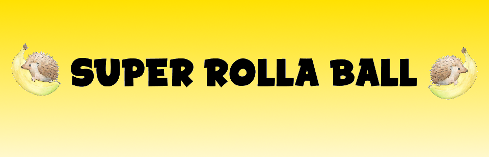
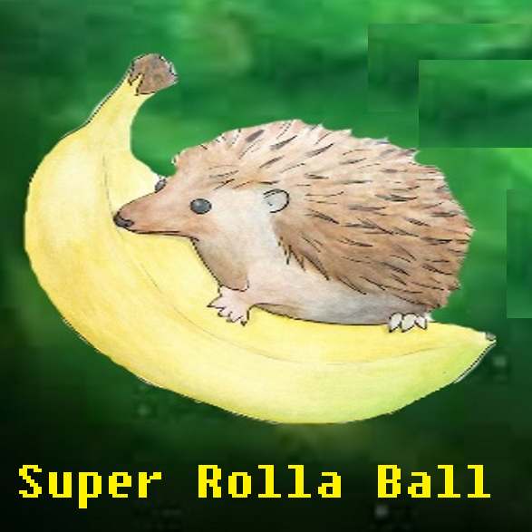
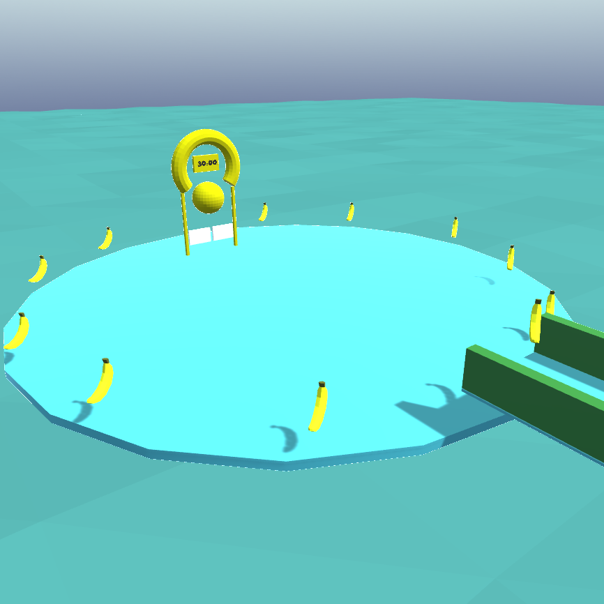
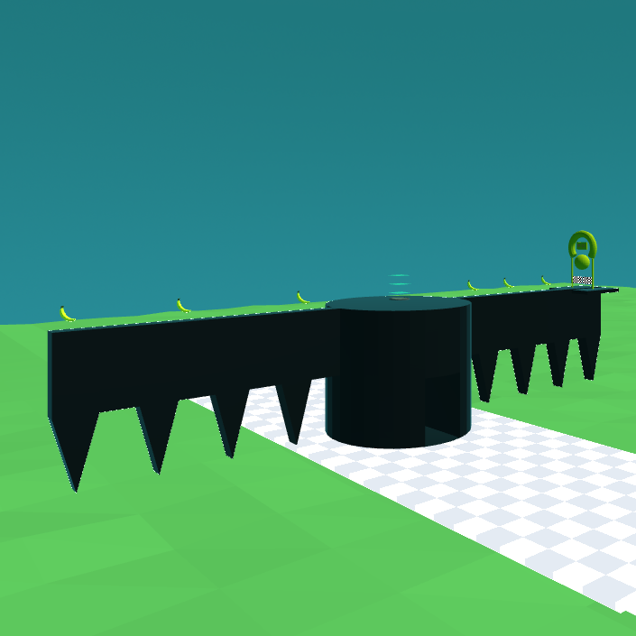
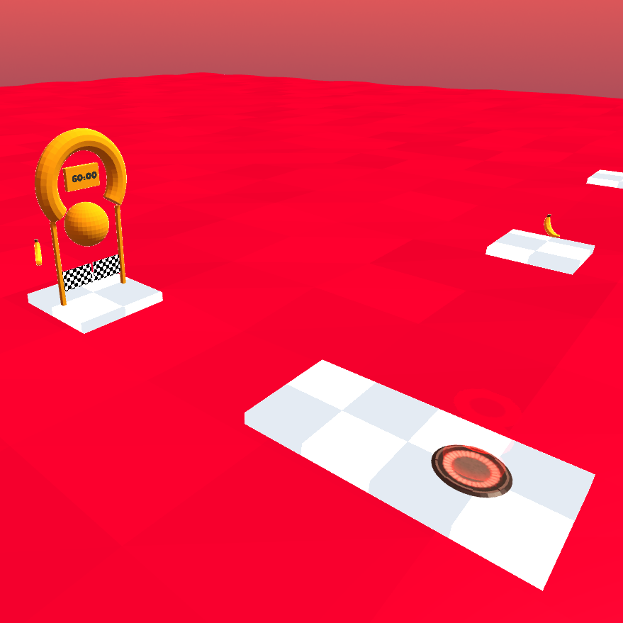

Summary
Super Rolla Ball is a fun-packed 3D platformer. Based off Super Monkey Ball, the player is a hedgehog trying to roll its way to the finish line and collect bananas on the way. The player must try to collect trophies for fastest time, all bananas, and highest score in three levels.
Contributions
This project was a one-man team effort that taught me a lot. I learned how to use shader scripts to make checkered materials. I learned how to use coroutines to create timed events. I learned more about Blender to make some 3D models. My favorite part of the project was designing the levels and creating small features such as trophies.

Level 1
Level 1

Level 2
Level 2

Level 3
Level 3